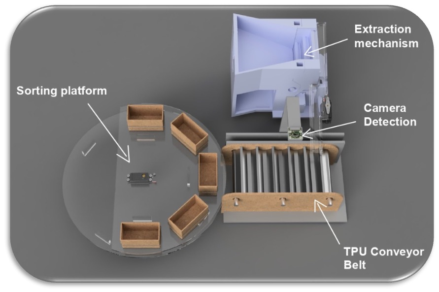
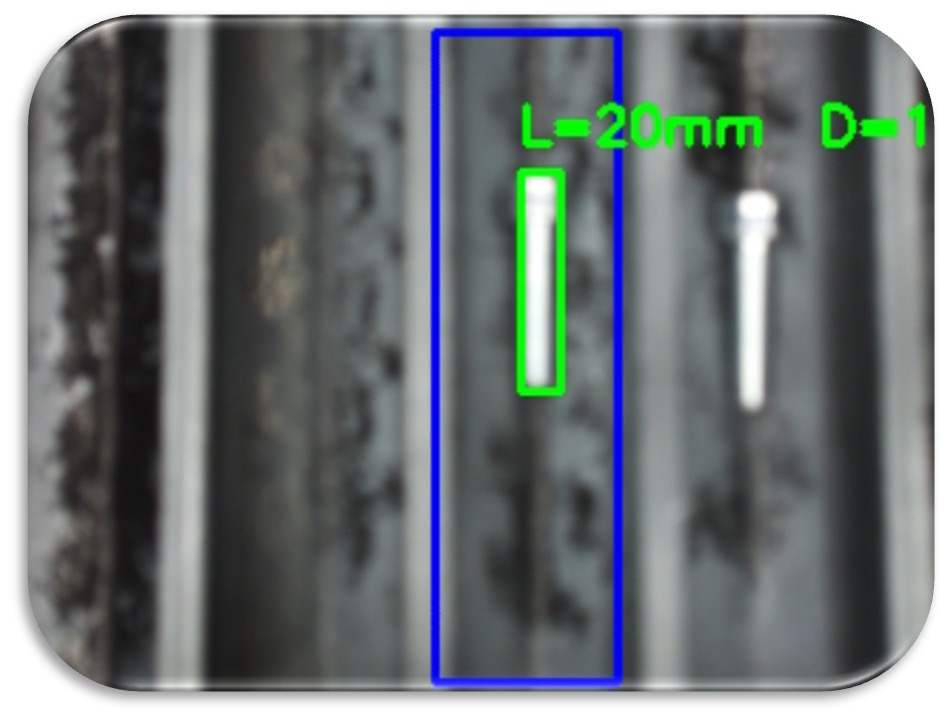
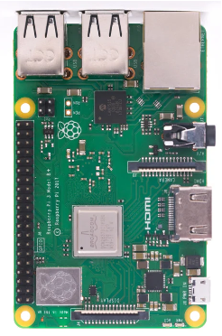
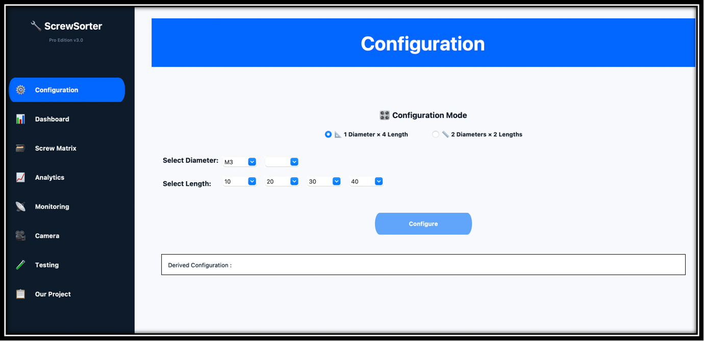
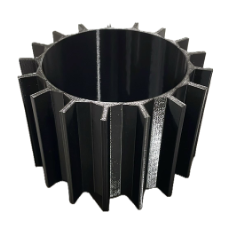

ScrewSorter
Development of a compact automated screw sorting system for small workshops, combining screw isolation, conveyor transport, camera-based measurement and bin distribution, with a strong focus on sustainability, low energy use and practical manufacturability.

Project Overview
ScrewSorter was designed as an automated sorting machine adapted to small and medium-sized workshops, where mixed screws are often discarded instead of reused.
The final concept combines a lifting and separation subsystem, a custom conveyor with closed-loop positioning, a camera-based measurement system and rotating bins for automated sorting.
Key Contributions
- Mechanical design of subsystems and final integrated prototype
- Design progression from concept selection to proof of concept
- Cost analysis and product positioning for batch production
- Sustainability-oriented engineering for reuse and low energy consumption
- Integration of sensing, control logic and manufacturable components
System Architecture
The machine is structured around three main functions: screw isolation, camera-based measurement, and automated sorting.
A lifting system and one-by-one ramp feed screws individually onto a custom TPU conveyor, where a vision system estimates diameter and length before the screw is routed into the appropriate bin.
Performance
- 12 screws/min sorting speed
- 90% sorting accuracy
- 57 W maximum instantaneous power
- 600 × 900 × 280 mm final size
- M3–M6 and L10–L70 screw range
- 70% material sorting accuracy
Engineering Highlights
- Custom TPU belt geometry for screw alignment and sensing
- Closed-loop conveyor control using a distance sensor
- Camera-based length and diameter estimation
- Prototype optimized for compactness and workshop integration
- Design trade-offs between throughput, robustness and complexity
Cost & Sustainability
The single prototype cost was estimated at 262.55 CHF, while the projected production cost for a batch of 100 units was 187.59 CHF per unit, leading to a target selling price of about 230 CHF.
The project was framed around reuse, reduction and rethink principles, with the objective of reducing screw waste, manual sorting effort and associated environmental impact.
Associated Laboratory Website
Image Gallery



